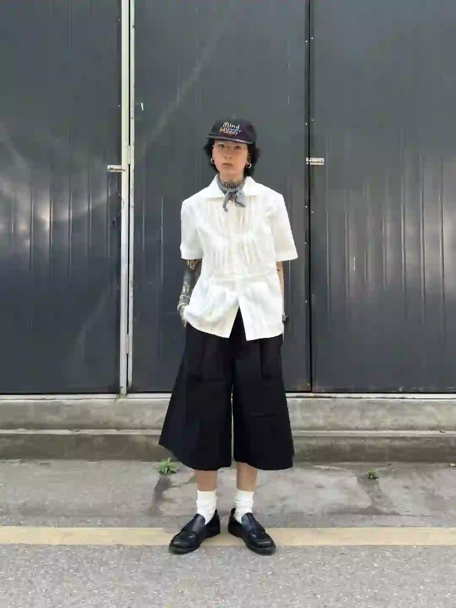
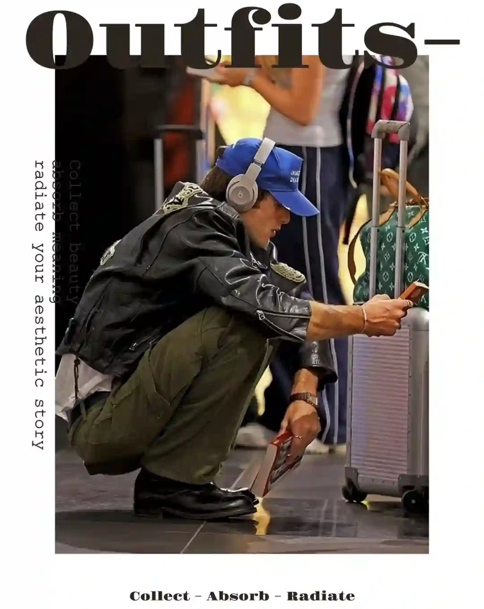
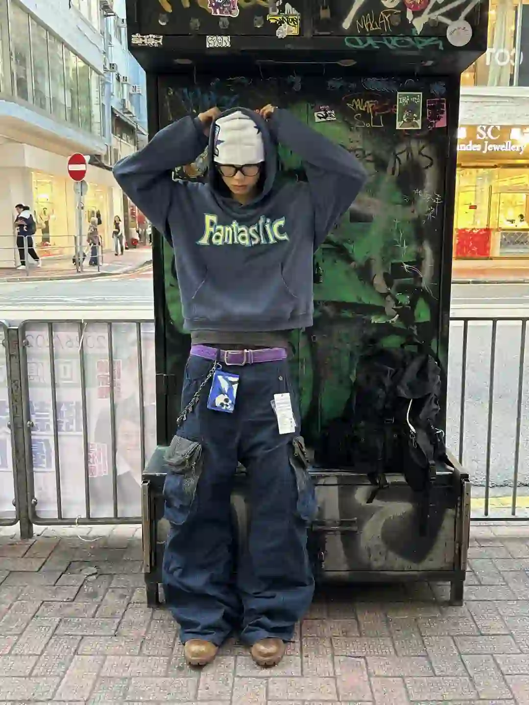
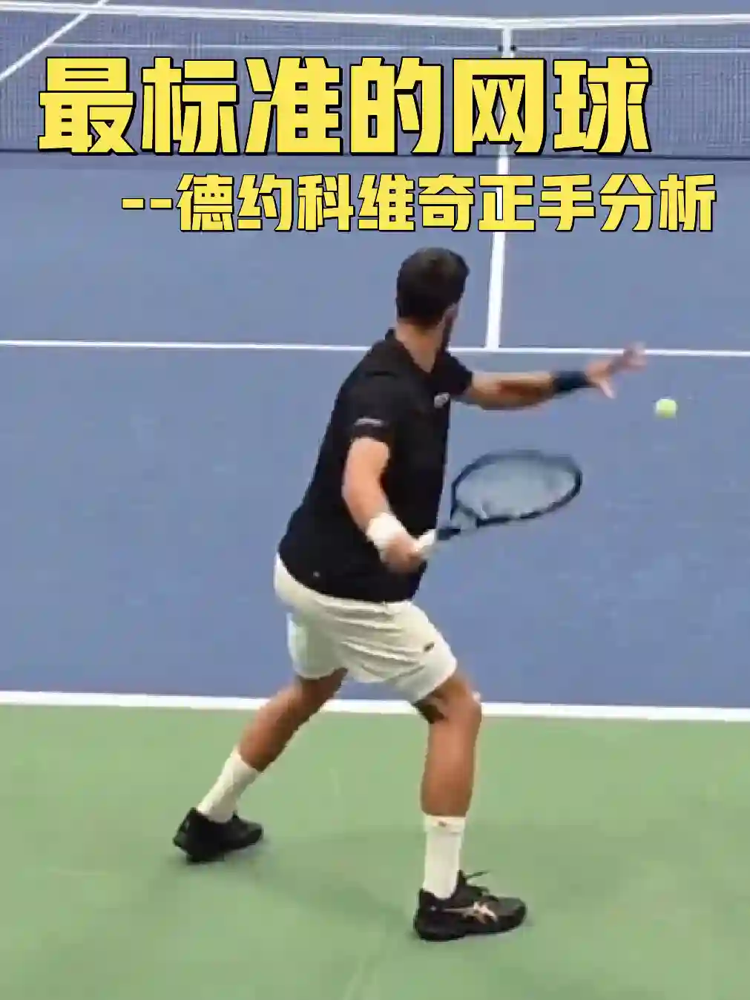
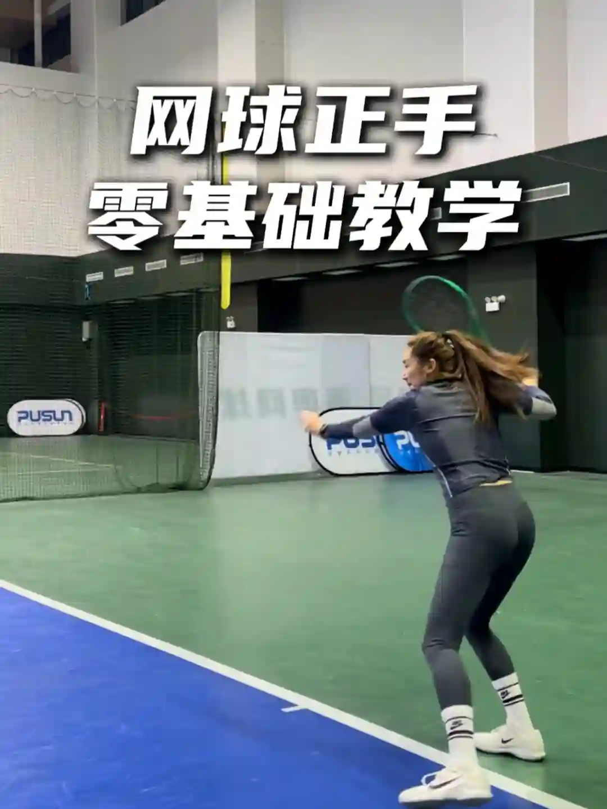

2026年5月8日
05月08日报告
生成时间：2026-05-08 · 范围：时尚 / 穿搭 / 网球
今日参考账号：Nest & Coast / Nina.pdf / 负像之诗
今日高信号标题：高级感法则：穿得像自己 ｜ Solutions Camouflage Collection Lookbook ｜ 100位宝藏摄影大师 | jorgemchagas
竞品策略变化：未命中监控竞品样本
今日高信号标题：高级感法则：穿得像自己 ｜ Solutions Camouflage Collection Lookbook ｜ 100位宝藏摄影大师 | jorgemchagas
竞品策略变化：未命中监控竞品样本
时尚 · 01
高级感法则：穿得像自己
⭐ 5485
👍 10154
今天可学
- 内容结构：未判定 + 0图，更像单点表达
- 收藏效率高，说明用户把它当成可复用模板/知识卡，不只是刷到即过
- 正文入口：（正文为空或未取到）
时尚 · 02
Solutions Camouflage Collection Lookbook
⭐ 1078
👍 3786
今天可学
- 内容结构：人物 + 0图，更像单点表达
- 收藏效率高，说明用户把它当成可复用模板/知识卡，不只是刷到即过
- 正文入口：（正文为空或未取到）
时尚 · 03
100位宝藏摄影大师 | jorgemchagas
⭐ 965
👍 3977
今天可学
- 内容结构：未判定 + 0图，更像单点表达
- 收藏效率高，说明用户把它当成可复用模板/知识卡，不只是刷到即过
- 评论活跃，适合加入观点冲突、对比案例或常见误区来拉讨论
- 正文入口：（正文为空或未取到）
时尚 · 04
Video for COMMON/DIVISOR Vol.7
⭐ 470
👍 601
今天可学
- 内容结构：未判定 + 0图，更像单点表达
- 收藏效率高，说明用户把它当成可复用模板/知识卡，不只是刷到即过
- 正文入口：（正文为空或未取到）
时尚 · 05
“秀场积累”Emporio Armani 26秋冬时装秀
⭐ 689
👍 1307
今天可学
- 内容结构：未判定 + 0图，更像单点表达
- 收藏效率高，说明用户把它当成可复用模板/知识卡，不只是刷到即过
- 正文入口：（正文为空或未取到）
时尚赛道今日方法论
- 样本依据：高级感法则：穿得像自己 / Solutions Camouflage Collection Lookbook
- 当天结构信号：未判定封面 + 0图 最强；优先学习样本 5 条，低收藏流量样本 0 条。
- 时尚赛道今天跑出来的是“审美判断 + 资料感整理”：像 Video for COMMON/DIVISOR Vol.7 这类高收藏样本，核心不是讲步骤，而是把趋势、风格线索和案例并排给足，用户才愿意以 78.2% 的收藏率反复回看。
- 执行建议：标题先抛出趋势/风格判断，再给明确收益；正文少讲空泛氛围，多给风格标签、对照案例和可复看的视觉结论，让内容更像灵感资料卡。
今日参考账号：查理叔叔 / 索梅达 / Ego
今日高信号标题：👨🏻40+叔叔｜5套男生穿搭学会蓝色搭卡其色 ｜ 近期的一周穿搭 ｜ 我喜欢的日系感觉
竞品策略变化：未命中监控竞品样本
今日高信号标题：👨🏻40+叔叔｜5套男生穿搭学会蓝色搭卡其色 ｜ 近期的一周穿搭 ｜ 我喜欢的日系感觉
竞品策略变化：未命中监控竞品样本

穿搭 · 01
👨🏻40+叔叔｜5套男生穿搭学会蓝色搭卡其色
⭐ 1171
👍 1652
今天可学
- 内容结构：文字卡 + 9图，更像资料型合集
- 收藏效率高，说明用户把它当成可复用模板/知识卡，不只是刷到即过
- 正文入口：蓝色搭配卡其色穿搭教程，会穿真的很简单
- 标签聚焦：#穿搭合集 / #OOTW / #胶囊衣橱 / #男生休闲风穿搭

穿搭 · 02
近期的一周穿搭
⭐ 683
👍 1733
今天可学
- 内容结构：人物 + 4图，更像单点表达
- 收藏效率高，说明用户把它当成可复用模板/知识卡，不只是刷到即过
- 评论活跃，适合加入观点冲突、对比案例或常见误区来拉讨论
- 标签聚焦：#Ootd / #flowfit / #通勤穿搭 / #日系穿搭
穿搭 · 03
我喜欢的日系感觉
⭐ 366
👍 1521
今天可学
- 内容结构：未判定 + 0图，更像单点表达
- 收藏效率高，说明用户把它当成可复用模板/知识卡，不只是刷到即过
- 评论活跃，适合加入观点冲突、对比案例或常见误区来拉讨论
- 正文入口：（正文为空或未取到）

穿搭 · 04
审美积累｜学Jacob Elordi穿Vintage
⭐ 151
👍 478
今天可学
- 内容结构：文字卡 + 4图，更像单点表达
- 收藏效率高，说明用户把它当成可复用模板/知识卡，不只是刷到即过
- 正文入口：最近越来越喜欢 Jacob Elordi 这种复古穿搭思路。 他穿的不是那种刻意做旧的 vintage，而是看起来本来就属于他的衣服。 旧皮衣、褪色牛仔、软塌领口衬衫、宽松军绿裤 …
- 标签聚焦：#复古穿搭 / #vintage穿搭 / #男友风穿搭 / #松弛感穿搭

穿搭 · 05
在香港的一周穿了啥🇭🇰
⭐ 101
👍 577
今天可学
- 内容结构：人物 + 9图，更像资料型合集
- 收藏与点赞较平衡，可学选题包装，但仍需补强可执行细节
- 正文入口：发发前段时间跟朋友去香港玩的照片。 很喜欢这几天拍的照片，比起那些很炸很hype的穿搭照。这种跟朋友一块出远门玩 在酒店 在电梯 在路边 在随便逛的一家买手店 又或者凌晨两三点下楼…
- 标签聚焦：#Ootd / #outfit / #ootdinspo / #streetwear
穿搭赛道今日方法论
- 样本依据：👨🏻40+叔叔｜5套男生穿搭学会蓝色搭卡其色 / 近期的一周穿搭
- 当天结构信号：文字卡封面 + 9图 最强；优先学习样本 4 条，低收藏流量样本 0 条。
- 穿搭赛道今天最有效的是“整套可抄作业方案”：高收藏样本 👨🏻40+叔叔｜5套男生穿搭学会蓝色搭卡其色 说明，只要场景清楚、look 数量够多、搭配结果一眼能看懂，就更容易拿到 70.9% 级别的收藏反馈。
- 执行建议：优先做通勤/职业/一周不重样/套装盘点这类清单式内容；封面先给完整上身结果，图组里再拆单品变化和搭配理由，不要只发单套氛围图。
今日参考账号：网球gogogo / 盖奥 / 网圈美羊羊
今日高信号标题：网球标准：德约科维奇-正手慢动作分析！ ｜ 网球正手零基础教学（全流程+细节串联） ｜ 家人们看看氛围感有3.0吗
竞品策略变化：未命中监控竞品样本
今日高信号标题：网球标准：德约科维奇-正手慢动作分析！ ｜ 网球正手零基础教学（全流程+细节串联） ｜ 家人们看看氛围感有3.0吗
竞品策略变化：未命中监控竞品样本

网球 · 01
网球标准：德约科维奇-正手慢动作分析！
⭐ 7301
👍 8181
今天可学
- 内容结构：视频封面 + 视频，更像视频示范/单点表达
- 这条流量带有明显外部加成，只拆内容结构与包装，不原样复制流量来源
- 正文入口：最适合业余选手学习的网球动作~#网球 #网球教学 #德约科维奇 #国庆节 #WTT中国大满贯 #网球中国赛季来了 #上海大师赛 #球类运动日常 #打球 #人生的意义
- 标签聚焦：#网球 / #网球教学 / #德约科维奇 / #国庆节

网球 · 02
网球正手零基础教学（全流程+细节串联）
⭐ 3578
👍 3397
今天可学
- 内容结构：视频封面 + 视频，更像视频示范/单点表达
- 收藏效率高，说明用户把它当成可复用模板/知识卡，不只是刷到即过
- 标签聚焦：#网球 / #网球正手 / #网球教学 / #网球正手零基础教学
网球 · 03
家人们看看氛围感有3.0吗
⭐ 1254
👍 4602
今天可学
- 内容结构：人物 + 0图，更像单点表达
- 收藏效率高，说明用户把它当成可复用模板/知识卡，不只是刷到即过
- 评论活跃，适合加入观点冲突、对比案例或常见误区来拉讨论
- 正文入口：（正文为空或未取到）

网球 · 04
attack tennis 🎾
⭐ 969
👍 4452
今天可学
- 内容结构：视频封面 + 视频，更像视频示范/单点表达
- 收藏效率高，说明用户把它当成可复用模板/知识卡，不只是刷到即过
- 标签聚焦：#tennis / #rf / #テニス / #网球

网球 · 05
网球穿搭分享🎾
⭐ 711
👍 1798
今天可学
- 内容结构：视频封面 + 视频，更像视频示范/单点表达
- 收藏效率高，说明用户把它当成可复用模板/知识卡，不只是刷到即过
- 评论活跃，适合加入观点冲突、对比案例或常见误区来拉讨论
- 正文入口：穿着我的新衣服上课去了
- 标签聚焦：#ootd / #男生穿搭 / #网球穿搭
网球赛道今日方法论
- 样本依据：网球正手零基础教学（全流程+细节串联） / 家人们看看氛围感有3.0吗
- 当天结构信号：视频封面封面 + 视频 最强；优先学习样本 4 条，低收藏流量样本 0 条。
- 网球赛道今天胜出的不是热闹球场感，而是“动作纠错/装备收益/新手可执行”：高收藏样本 网球正手零基础教学（全流程+细节串联） 证明，只要用户能马上拿去练，收藏率就能来到 105.3%。
- 执行建议：标题写清动作部位、错误修正或装备收益；内容里给慢动作、步骤和上场场景。明星/赛事样本只借包装，不把热点本身当方法论。
- 风险提醒：网球标准：德约科维奇-正手慢动作分析！ 已标记为 [不可复制]，只拆结构，不作为明日选题原样跟进。
- 自动抽取规则：仅收录收藏率 >20% 且未被标记为 [不可复制] 的标题模板
- 写入目标：/Users/zhangxiaosong/shared/context/xhs-knowledge/topics/title-templates.md
- 把今天高收藏、高可复制的打法优先塞进明日发帖计划
- 竞品若连续两天从展示型转向教程/资料型，单独开策略变更记录
- 对被标注 [不可复制] 的样本，只拆结构，不抄流量来源